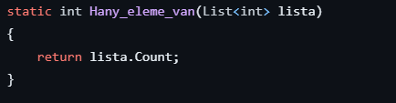
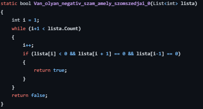
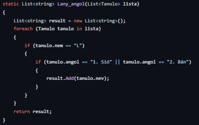
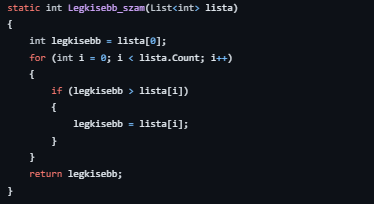
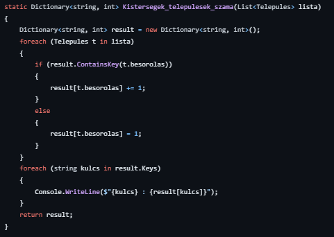

Ezekkel a feladatokkal kezdtünk el igazán programozi C#-ban. Két részben vettük őket. Először 3000A-3000I-ig. Itt csak 11 feladat volt és az utolsót mindig csoportosítással kellett megoldani. Utána jöttek a feladatok 3000J-3000O-ig. Ezeknél már sokkal több feladat volt (a legkevesebbnél 40, a legtöbbnél 90).
Nagyon szerettem ezeket csinálni, még akkor is, amikor az idegeimra mentek, mert nem működtek vagy működtek csak nem úgy ahogyan nekik kellett volna.
| Programozási tételek | Feladatok | Függvények |
|---|---|---|
| Megszámlálás | Hány eleme van a sorozatnak? (3000A) |  |
| Keresés | Van-e a sorozatban olyan negatív szám, amelyet két nulla követ? (3000G) |  |
| Kiválogatás | Gyűjtse ki azon lány diákok nevét, akik az egyes vagy kettes angol csoportban vannak! (3000J) |  |
| Maximum/Minimum keresés | Mennyi a sorozatban található legkisebb szám?(3000B) |  |
| Csoportosítás | Készítsen kimutatást kistérségi bontásban, amelyben megadja az egyes kistérségek településeinek a számát!(3000M) |  |